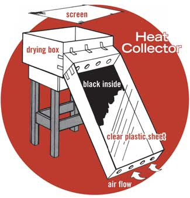

The end of summer is harvest time, and we frequently have no idea how to store the bounty. One way is to dry the fruits and vegetables. There are lots of electric and solar food dehydrators on the market, or you can build your own from free, recycled materials.
To build your sun-powered unit, choose a long, shallow cardboard box and cut a few holes in each of the narrow ends. Then paint the inside of the box black or line it with black plastic sheeting. Cover the box’s top with clear plastic, and the heat catcher portion is complete.
Now, take another cardboard box and make several holes in one side. Set it on a table or stand, and lean the solar box against it at the most effective angle to catch the sun’s rays. Then use some scrap cardboard and tape to form an air duct connecting the shallow “solar” unit to the side of the drying box (as shown at left). Finally, lay a screen on top of the drying box and arrange the food to be dehydrated on that surface.
This is not a permanent food dryer, and it’s certainly not waterproof - but you wouldn’t leave your drying produce out in the rain or snow anyway.
Note: Run the dryer for a few days without any food, to drive off any fumes that might be released from the paint or plastic.
Dale Jennings
Mother Earth News, January/February 1981
For much more information on food drying and freezing options, read How to Dry & Freeze Tomatoes. - Mother
|
 MOTHER EARTH NEWS STAFF Make this easy to use dehydrator to dry your garden produce. |
|
|